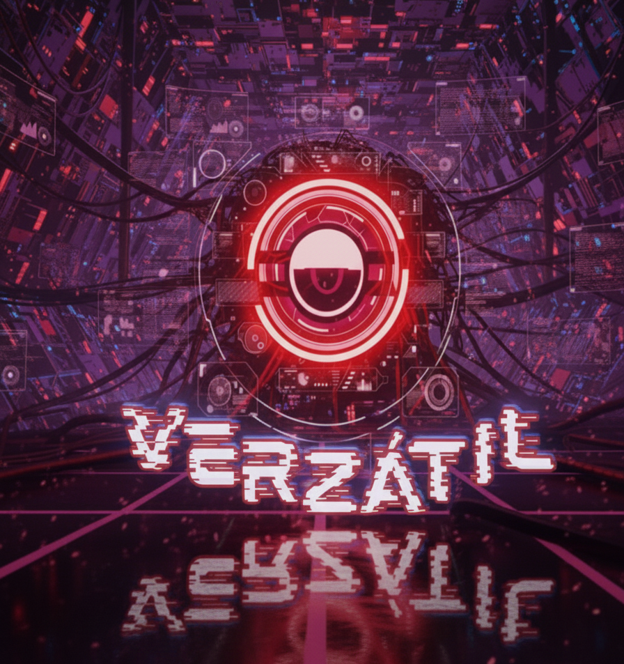

Nos adentramos en los ecos de una casa detenida en el tiempo, donde los susurros nocturnos revelan presencias que habitan entre el sueño y la vigilia. A través de una atmósfera sonora ritual y un diálogo entre L’exoth y Belx’ceph, se explora el mito de los incubus y succubus: entidades que seducen desde las sombras, alimentándose de la energía vital de quienes se atreven a cerrar los ojos. Con una narrativa poética y perturbadora, Los huéspedes nocturnos entrelaza leyenda, deseo y miedo, invitando al oyente a cuestionar qué es real cuando el cuerpo duerme pero el alma permanece expuesta. ¿Son solo sueños… o visitas?
“Los huéspedes nocturnos”
Departamento de Estudios Culturales
Universidad Autónoma Metropolitana, Unidad Lerma
Formato podcast
Escrito por:
Martinez Ruiz Alejandro(M.R.Lex)
Producido por: Diego Valdez
Versión. 1.
Versátil: Temporada 2
Fecha: 03/11/2025
[Sonidos: viento silbando entre las rendijas, un reloj antiguo que marca la medianoche, crujidos de madera vieja.]
[Introducción - 0:30 min]
L'exoth (misterioso, pausado):
“Bienvenidos a Voces del Inframundo... Esta noche, nos adentramos en los pasillos de una casa donde el tiempo se detuvo, donde las paredes susurran secretos de quienes cruzaron su umbral... y nunca despertaron igual. Porque hay huéspedes que llegan sin ser invitados... y que se alimentan del más profundo de tus sueños.”
[Diálogo - Desarrollo 2:00-3:00 min]
Belx’ceph (curioso, explorando):
“¿Por qué esta casa tiene esa reputación? Es solo un montón de habitaciones vacías y muebles viejos... aunque... se siente como si alguien estuviera observándonos.”
L'exoth (profundo, pausado):
“Las casas antiguas nunca están vacías. Esta en particular... fue testigo de algo oscuro. Se habla de los huéspedes nocturnos.”
Belx’ceph (intrigado):
“¿Huéspedes nocturnos? ¿De quién hablas?”
L'exoth (con tono profético):
“Los conoces como incubus y succubus. Demonios que visitan en la penumbra de la noche. Criaturas que toman la forma de tus deseos más íntimos, pero que no buscan placer... buscan consumir tu fuerza vital.”
(Pausa breve. El viento arrecia, se escucha una respiración suave pero inquietante a lo lejos.)
Belx’ceph (nervioso, intentando bromear):
“Vamos, suena como un cuento antiguo. ¿Quién creería en eso hoy en día?”
L'exoth (grave, como recitando una historia perdida):
“No importa si crees en ellos... porque si te eligen, te visitarán. Primero llegan como un sueño. Una figura perfecta, seductora, que susurra tu nombre desde las sombras. Pero cuando despiertas... no eres el mismo.”
(Sonidos: pasos lentos que vienen del techo, el crujido de una puerta abriéndose ligeramente en otra habitación.)
[Relato - Las señales de su presencia]
Belx’ceph (con un hilo de voz):
“Y... ¿cómo sabes si un succubus o un incubus te están rondando?”
L'exoth (pausado, con intensidad creciente):
“Primero... los sueños. Sueños tan vívidos que parecen reales. Despiertas agotado, sintiendo un peso sobre el pecho... como si algo o alguien te estuviera sofocando.”
(Sonido: respiración pesada, un susurro apenas audible que pronuncia el nombre de Belx’ceph en el fondo.)
Belx’ceph (mirando a su alrededor, inquieto):
“Espera... ¿escuchaste eso? Pareció... mi nombre.”
L'exoth (sin inmutarse):
“Luego... el frío. Las habitaciones se vuelven heladas de repente, como si alguien invisible estuviera de pie junto a ti.”
(Sonido: un viento frío recorre la habitación, seguido de un golpe seco como si algo hubiera caído.)
Belx’ceph (cada vez más nervioso):
“¿Pero cómo los detienes? ¿Cómo los... echas?”
L'exoth (en tono ominoso):
“No puedes. Ellos eligen cuándo irse... si es que deciden irse.”
(Silencio tenso. El reloj suena marcando las 3 de la madrugada. “Dong... Dong... Dong...”)
[Cierre - 0:30-1:00 min]
Belx’ceph (susurrando, casi temblando):
“L’exoth... creo que alguien está aquí. Escucho... respiración en el pasillo.”
(Sonido: pasos suaves avanzando lentamente hacia la habitación, acompañados de una risa femenina baja y perturbadora.)
L'exoth (en tono solemne, como si aceptara un destino inevitable):
“Entonces ya es tarde. No les abras la puerta, Belx’ceph... y por ningún motivo, te atrevas a cerrar los ojos.”
(El sonido de una puerta abriéndose de golpe, un grito ahogado y luego... silencio absoluto. Solo queda el viento.)
[Desvanecimiento de sonidos: viento suave, la risa distante que se pierde poco a poco]
L'exoth (en un susurro final, dirigido al oyente):
“Si esta noche sientes frío y escuchas tu nombre en un susurro... no mires. Porque quizás, ellos también te eligieron.”
(Música tétrica cierra el episodio.)
-Guiley, R. E. (2009). The encyclopedia of demons and demonology. Facts On File. -Russell, J. B. (1977). The devil: Perceptions of evil from antiquity to primitive Christianity. Cornell University Press. -Leyendas Legendarias. (2021, abril 7). E110: Demonología [Audio podcast episodio]. En Spotify. https://open.spotify.com/episode/1NHjkJ6Dx5aLfliy1xWviZ